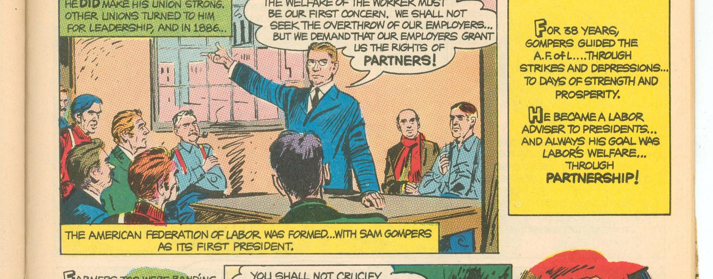

How it works: read the comic pages → answer the question about today's big idea → see what the comic got right and wrong → write 1–2 sentences. Done = all parts green, then turn in at the bottom.
Word help (tap to open)
- Union = a group of workers who bargain with owners together
- Strike = all the workers stop working at once
- Collective bargaining = the union and owners work out a deal together
- Class struggle = the idea that workers and owners are always fighting
- Delusion = a false belief
- 1953 comic = made by the U.S. government to tell America's story in other countries. It shows one point of view.

Click the page to make it bigger.
Turn in your work
Your work saves on this device, so you can come back later. Your teacher sees it after you turn it in.
Comic: A Picture Story of the United States (1953), made for the United States Information Service, a U.S. government agency. Public domain. Scan: University of Nebraska–Lincoln Libraries, educational comics collection, via the Internet Archive.